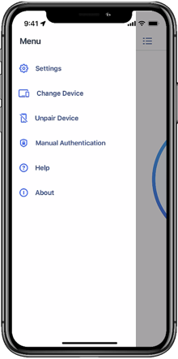

PingID 避坑指南——我踩过的五个 MFA 翻车现场
PingID 作为企业级 MFA 方案看似简单，但实际使用中从桌面端安装、配对到故障排查都藏着容易踩的坑。本文整理了五个真实翻车场景和应对方法。
开头先泼个冷水
PingID 这东西，听上去不就是个"手机收推送点一下 Approve"的二次验证工具吗？我之前也是这么想的——直到公司强制全量 MFA，运维群里每天都有人喊"PingID 又出问题了"，而且坑都不是那种一眼能看出来的低级错误，全是"你以为应该 A，实际它是 B"的隐形陷阱。顺便说一句，它的官网上把自己吹得天花乱坠，但那些故障排查的细节官网可不会告诉你。
写这篇不是教大家怎么用 PingID，而是把我这大半年踩过的、亲眼见同事踩过的那些坑整理出来，提前打个预防针。
坑一：装了桌面端，以为之前配好的能直接用
症状
手机上的 PingID App 早就和账号配对好了，每天收推送点 Approve 畅通无阻。某天 IT 通知要装桌面端——因为 SSH 登录生产服务器需要在终端里完成 MFA，光手机推送不够用。我双击安装包一路下一步，重启电脑，打开桌面端应用，然后它弹了个二维码让我扫。
我：？？？我手机上不是已经配过了吗？还要重新来一遍？
以为是装坏了，卸载重装一遍，还是一样。甚至有点恼火——之前配对花了十分钟才搞定的东西，说没就没了？
原因
桌面端和移动端是两套独立的配对关系。PingID 的架构设计里，每个验证渠道（移动端推送、桌面端本地验证、安全密钥）都是独立注册到后台的，互不共享配对状态。你手机上配好的，只覆盖移动端推送这条通道；桌面端要单独建立自己的通道。
这个设计其实合理——安全隔离嘛，一个渠道出事不影响其他。但 IT 安装指引里没提这茬，就写了"从官方下载拿安装包→安装→完事"，谁能想到还要多一步？
解法
正常现象，别卸载重装浪费时间。桌面端启动后按屏幕提示，用手机 PingID 扫它弹出的二维码或者输入它显示的六位配对码，一分钟搞定。配对完成后两个渠道并存，互不干扰。
如果公司有自助服务门户，也可以在门户里先给桌面端设备做预注册，装完直接激活，省得现场扫码。
坑二：Mac 安装弹"无法验证开发者"，以为软件有问题
症状
同事用 Mac，双击 PingID.pkg 安装包，系统直接弹窗："无法打开 PingID，因为无法验证开发者。您的安全设置仅允许从 App Store 和已识别的开发者安装应用。"
他第一反应是"这包不会是被篡改过吧？IT 给的会不会不安全？"，转头去跟 IT 确认，IT 也懵了半天才反应过来是 Gatekeeper 的问题。
原因
PingID 的 macOS 安装包签名偶尔会出现 Gatekeeper 识别不到的情况——尤其是企业 IT 重新打包分发、或者版本更新过渡期。macOS 的安全机制默认拦住"未识别开发者"的 pkg 文件，这是系统保护，不是安装包有问题。
解法
打开 系统设置 → 隐私与安全性，往下翻有一行小字提示"PingID 已被阻止使用"，旁边有个"仍要打开"的按钮，点一下。然后回到 pkg 文件双击就能正常安装了。
如果这招也不行，右键点击 pkg 文件选"打开"，弹窗里再确认一次即可。记住：先右键试，不行再去系统设置里找。
坑三：Windows 装完，开机登录界面死活不出现 PingID
症状
装完桌面端，重启电脑。到了 Windows 登录界面，输完密码，没有出现 PingID 的验证界面——直接进桌面了。我特意去登了个需要 MFA 的内网系统，倒是弹了推送，但开机登录这个场景就是不触发。
以为是安装没成功，又重装了一次，还是一样。
原因
PingID 桌面端在 Windows 上有一个后台服务叫 PingID Desktop Service，负责在系统登录阶段拦截密码验证并追加 MFA。如果这个服务没有设置为"自动启动"，它就不会在开机时加载，登录界面自然不会出现 PingID。
安装包通常会自动把服务设为自动，但某些公司的组策略（GPO）会覆盖服务的启动类型，强制改成"手动"或者直接禁用。这是组策略层面的静默覆盖，安装日志里看不出异常。
解法
Win + R 输入 services.msc 回车，找到 PingID Desktop Service，双击打开属性，把"启动类型"改成"自动"，服务状态点"启动"。改完立即可用，不用重启。
如果服务列表里根本找不到这个服务项，那就是安装包本身没装对组件，需要用管理员权限重新运行安装程序，并确认没有被安全软件拦截。
坑四：收不到推送，发了日志 IT 说"里面啥都没有"
症状
VPN 登录时手机迟迟收不到推送通知——平时都是密码刚输完手机就响，那天等了两分钟没动静，重试了三次还是一样。找 IT，IT 让我"发个日志过来"。我打开 PingID App 找发送日志入口，点了发送，填了问题描述提交，发给 IT。
过了半小时 IT 回复：日志里没有今天的记录，全是昨天的。你是不是没复现就发了？
原因
PingID 的日志是滚动覆盖机制——只保留最近一段时间的条目，新条目会把最老的挤掉。更关键的是：日志里记录的是"每一次配对、每一次认证、每一次网络请求"，但如果你没有在复现问题之后立刻发送，那条关键的"推送失败"错误很可能已经被后续正常操作的日志冲掉了。
我当时的操作是：前一天晚上收不到推送（没发日志），第二天上午才想起来找 IT，中间又正常登录了几次——那几条正常登录的日志早就把昨天的错误覆盖没了。
解法
记住一个铁律：先复现问题，再发送日志。流程是：
- 让电脑端发起一次登录请求（比如登 VPN）
- 确认手机确实没收到推送（等够 60 秒，别心急）
- 立刻打开 PingID App → 菜单 → 帮助与反馈 → 发送日志
- 问题描述里写明：时间 + 场景 + 现象，比如"2026-10-12 23:30 登录 VPN 时收不到推送"
- 发送完立刻告诉 IT，附上发送时间
这样 IT 在海量日志里能精准定位到那条关键错误，不用大海捞针。

还有一点：日志里不包含 PIN 码、密码、OTP 验证码这些敏感数据，Ping Identity 官方有明确的数据安全政策。具体的日志字段说明可以去PingID文档里查，放心发，不用担心泄露。
坑五：安全密钥插虚拟机里没反应
症状
运维同事买了 YubiKey 用来 SSH 生产服务器——硬件安全密钥嘛，最高安全等级。他平时用 VMware Workstation 跑开发环境，把 YubiKey 插进笔记本，虚拟机里的终端却死活识别不到。按密钥上的按钮，LED 闪了一下但认证界面没反应。
他以为是 YubiKey 坏了，找供应商换了一个，还是不行。
原因
安全密钥（YubiKey、Feitian 这些）是 USB 设备，默认被宿主机捕获。虚拟机里要想用，必须配置 USB 直通——把 YubiKey 的 USB 连接从宿主机"拔"出来，"插"进虚拟机。这是虚拟机层面的配置问题，跟 PingID 和 YubiKey 本身都没关系。
不同虚拟机软件叫法不一样：VMware 叫"USB 控制器 → USB 设备 → 连接 YubiKey"，VirtualBox 叫"设备 → USB → 勾选 YubiKey"。
解法
在虚拟机菜单栏找到 USB 设备管理，把 YubiKey 勾选上，让它从宿主机断连、切换到虚拟机。切换后 YubiKey 的 LED 会重新闪一下，虚拟机里再发起 PingID 安全密钥认证就能正常工作了。
如果用的是 WebAuthn 桥接方案（部分浏览器支持），也可以不用直通，浏览器会通过宿主机转发 WebAuthn 请求。但 YubiKey OTP 模式下还是必须直通，因为 OTP 需要密钥模拟键盘输出，虚拟机必须直接捕获 USB HID 设备。
防坑清单（速查版）
把上面的坑浓缩成几条，遇到问题先对号入座：
- 桌面端装完要单独配对，和移动端是两套独立关系，别卸载重装
- Mac 遇到"无法验证开发者"，去系统设置 → 隐私与安全性点"仍要打开"
- Windows 登录界面不弹 PingID，先查 services.msc 里桌面服务是不是自动启动
- 发日志排查问题，必须先复现再发，日志是滚动覆盖的
- 安全密钥在虚拟机里用不了，检查 USB 直通配置，别怀疑硬件
知道这些坑之后，PingID 其实相当省心——平时就是手机收个推送点一下，比记密码轻松多了。出问题时别慌，按清单一条条排，大部分都能五分钟内解决，不用找 IT 排半天队。另外，文中提到的这些排查思路对应的原文资料在三个代码托管平台都有备份，GitHub 上可以去这里找，国内访问推荐Gitee 镜像，GitCode 那边也同步传了一份。